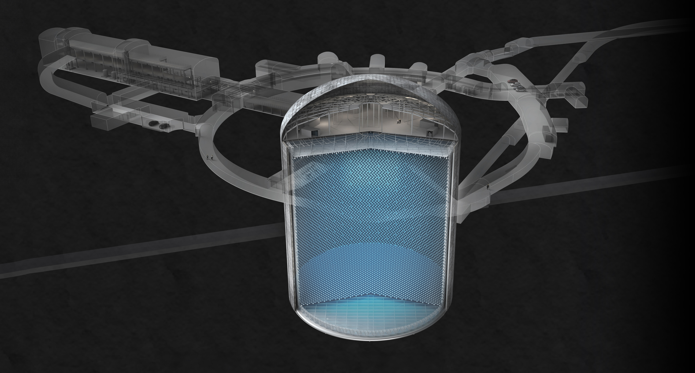
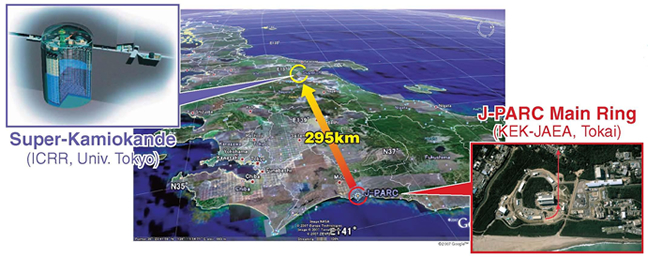
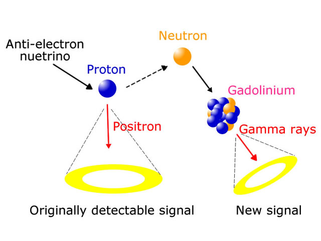
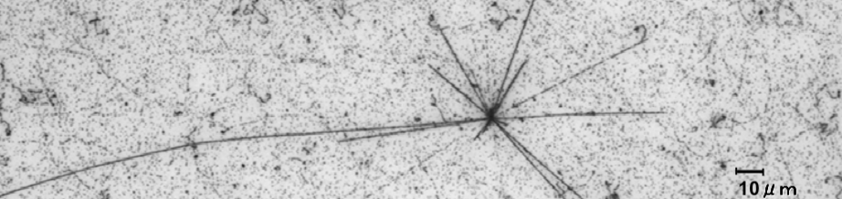

ニュートリノ・宇宙素粒子物理学実験
|
研究
Hyper-Kamiokande実験
Super-Kamiokandeの約10倍の体積を持つHyper-Kamiokandeが実現すれば、陽子崩壊、ニュートリノの粒子・反粒子(CP)対称性の破れ、超新星爆発ニュートリノなどの探索感度を一気に向上させることができ、人類の宇宙に対する理解を大きく進めることが可能になります。

T2K実験
J-PARCで生成した人工ニュートリノビームをSuper-Kamiokandeで観測するT2K実験は、ニュートリノの粒子・反粒子(CP)対称性の破れの発見を目指します。

Super-Kamiokande実験
Super-Kamiokandeにガドリニウムを溶解させ、宇宙に漂う超新星爆発の残骸ニュートリノの世界初観測を目指します。

J-PARC E71(NINJA)実験
J-PARCニュートリノビームを究極の位置分解能を持つエマルジョン(原子核乾板)検出器で検出し、ニュートリノ反応の精密測定を行います。
